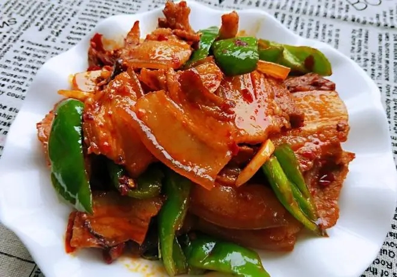
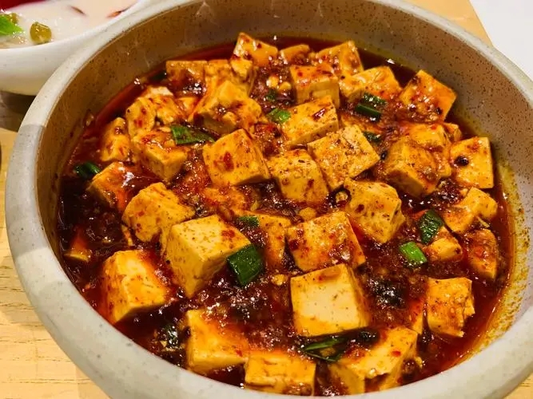
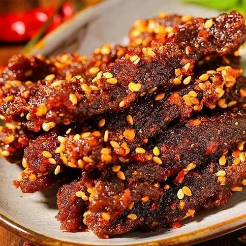
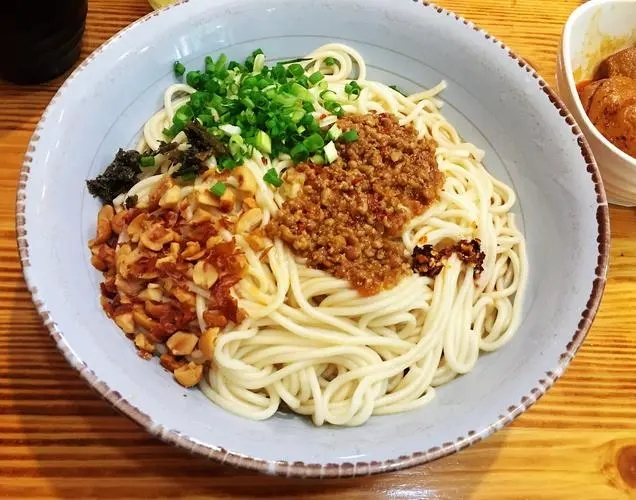
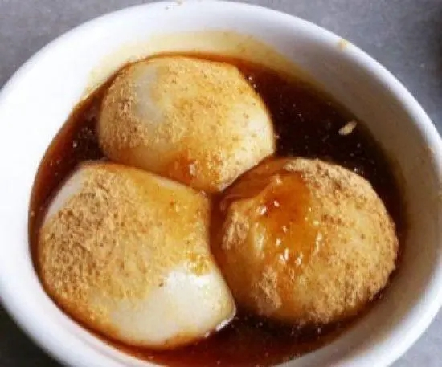
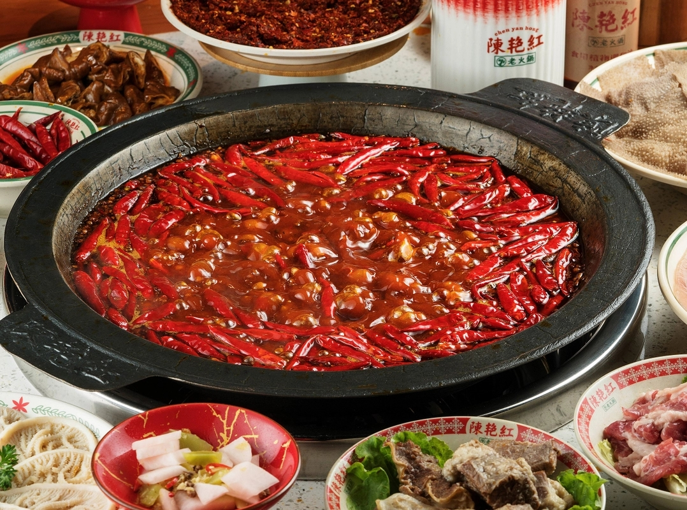

川味前沿
-
“美食+消食” 健康“幸福味”
“美食 + 消食” 的创新组合，将 “吃得尽兴 消化无忧”的健康关怀，融进了成都人的火锅餐桌。
发布日期：2025-12-04 阅读更多 -
又上新了！四川青神的柑橘，你吃过吗？
近日，在四川青神县白果乡的柑橘新品种试验田里，技术人员正悉心查看枝头新绿。
发布日期：2025-12-08 阅读更多 -
在成都，放心吃∣中学生乘食安巴士探秘果茶工厂与食检院
果茶与牛肉干是不少人的心头好，但你是否好奇一杯果茶需闯过多少“安心关卡”，牛肉干的牛肉占比又有多少？近日，“在成都，放心吃”食安巴士第三期活动如期启航。
发布日期：2025-10-28 阅读更多 -
成都建设166个“放心吃”消费场景 让市民游客消费得安安心心、明明白白
今年7月，“在成都，放心吃”食品安全守护专项行动在全市全面铺开，引导餐馆等六大类食品生产经营者高标准建设166个“放心吃”消费场景，让市民游客消费得安安心心、明明白白。
发布日期：2025-08-25 阅读更多
- 
- 回锅肉
- 回锅肉是四川民间的传统菜肴，也称熬锅肉，会锅肉．因其历史悠久，食者甚众，遂成为别具风味的四川名菜。“入蜀不吃回锅肉，等于没有到四川”，久居外乡的四川人，回川探亲访友，首先想到要吃的就是回锅肉。
- 
- 麻婆豆腐
- 麻婆豆腐是四川省传统名菜之一，属于川菜，主料为：豆腐，辅料为：蒜苗、牛肉沫(其他肉也可以)
- 
- 灯影牛肉
- 灯影牛肉是四川省达州市的当地传统名食。牛肉片薄如纸、色红亮，味麻辣鲜脆，细嚼之，耐人寻味。
- 
- 担担面
- 担担面是四川省成都市和自贡市的一种著名的传统小吃，属于川菜，该菜品据说源于挑夫们在街头挑着担担卖面而得名。
- 
- 三大炮
- 三大炮是四川省成都市的一道传统小吃，属于川菜系。三大炮的主要食材为糯米、红糖、芝麻、黄豆。由于在抛扔糯米团时，三大炮如“弹丸”一样，发出“当、当、当”的响声，分为“铁炮”，“火炮”，“枪炮”，故名总称“三大炮”。
- 
- 火锅
- 四川火锅，以麻，辣，鲜，香著称，他来源于民间，升华于庙堂，无论是贩夫走卒、达官显宦、文人骚客、商贾农工，还是红男绿女、黄发垂髫，其消费群体涵盖之广泛、人均消费次数之大，都是他地望尘莫及的。作为一种美食，火锅已成为四川和重庆两地的代表美食。
四川